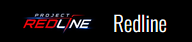

01
PILOTAGE &
MÉCANIQUE
Des conducteurs et techniciens passionnés, attentifs à la maîtrise du véhicule, à sa fiabilité et à ses performances.

PROJECT REDLINE · WAREDOGS
La vitesse est un langage. La précision, une signature.
Un collectif indépendant guidé par la maîtrise automobile, la technologie, la loyauté et le goût de la liberté.
RedLine Crew rassemble des profils variés, unis par la conviction qu'un système trop rigide peut laisser des personnes sur le bord de la route.
Les RedLine Crew trouvent leurs racines dans les méandres d’un système qui, selon eux, a trop longtemps favorisé l’injustice sociale. Issus d’horizons divers, ils ont choisi de se rebeller contre un ordre établi qu’ils considèrent comme corrompu. Leur origine ne réside plus dans un groupe de passionnés de courses de rue ou dans les bas-fonds de la société, mais dans la convergence de talents issus des milieux technologiques et administratifs, tous témoins des dysfonctionnements d’un système jugé trop rigide et inégalitaire
Dès le départ, leur objectif a dépassé la simple recherche de sensations fortes pour se transformer en une forme de contestation face à l’oppression et à la bureaucratie. Pour eux, chaque braquage n’est pas seulement une opération minutieusement orchestrée, mais aussi un acte symbolique dénonçant un système économique et politique qui laisse peu de place à l’individu.
Ils considèrent l’art du braquage comme un moyen de redistribuer le pouvoir, en ciblant des institutions qu’ils estiment excessivement influentes et en soutenant discrètement des causes populaires ainsi que des projets sociaux.
La vitesse et la précision deviennent alors les métaphores d’une résistance intellectuelle et technique face à l’injustice. Dans cette vision, l’évasion n’est pas uniquement une fuite : elle constitue une déclaration d’indépendance contre l’ordre établi.
Une structure souple qui valorise l'autonomie, la confiance et les compétences de chaque membre.
Des conducteurs et techniciens passionnés, attentifs à la maîtrise du véhicule, à sa fiabilité et à ses performances.
Des profils spécialisés apportent leurs connaissances techniques et leur capacité à résoudre des problèmes complexes.
La préparation, l'organisation et la circulation de l'information permettent au collectif de rester cohérent.
Des contacts diversifiés et des alliances ponctuelles soutiennent l'autonomie et l'évolution du groupe.
“
RedLine Crew s'est forgé une réputation de collectif discipliné et difficile à cerner. Son influence vient de son audace, de son sens de la préparation et de sa maîtrise automobile. La route devient un espace d'expression où chaque trajectoire demande anticipation et sang-froid.
Le Crew ne cherche pas la célébrité. Il préfère laisser derrière lui des histoires, des rumeurs et le souvenir d'un collectif dont la cohésion et l'ingéniosité font la différence.
Aujourd’hui encore, les RedLine Crew demeurent une légende urbaine. Mystérieux, insaisissables et difficiles à cerner, ils alimentent les rumeurs autant que les récits populaires. Leur objectif n’a jamais été de semer le chaos, mais de démontrer que la discipline, l’innovation et la passion de la vitesse peuvent repousser les limites imposées par l’ordre établi, sans jamais céder à la barbarie ni à la violence gratuite.
Le Crew diversifie ses activités pour financer ses projets, étendre ses contacts et préserver son indépendance. Chaque membre est recruté pour ses compétences exceptionnelles, que ce soit derrière un volant ou dans un domaine d’expertise particulier apportant une valeur essentielle à l’équipe. Cette diversité de talents constitue la véritable force du collectif.
Les rassemblements et courses automobiles sont un terrain de rencontre pour pilotes, mécaniciens et préparateurs. Les véhicules et leur mise au point occupent une place centrale dans l'identité du groupe.
Voir les objectifs ↗Le Crew agit comme intermédiaire entre différents réseaux et évolue dans des activités illégales variées. Son identité repose sur l'organisation, la mobilité et la discrétion plutôt que sur la violence gratuite.
Voir le code du crew ↗Le Crew est aussi connu pour son implication dans les vols organisés et les braquages ciblés. Ces opérations, souvent minutieusement préparées, visent principalement des cargaisons de valeur, des entrepôts ou des établissements disposant de ressources importantes.
Voir les objectifs ↗En parallèle de leurs activités illégales, les membres du RedLine Crew conservent une vie civile, exerçant des professions au sein d’entreprises légales qui leur permettent de maintenir une façade respectable, de développer leurs compétences et de s’intégrer pleinement à la société de San Andreas.
Voir le code du crew ↗Un code commun qui encadre l'attitude du Crew, sur la route comme dans ses relations.
La retenue et la préparation sont privilégiées. Une escalade évitable est considérée comme le signe d'un manque d'anticipation.
La maîtrise du véhicule repose sur le contrôle, la lecture de la route, l'anticipation et l'adaptation, pas sur la prise de risque aveugle.
La qualité d'une performance se juge autant à la précision et au sang-froid qu'au résultat obtenu.
Chaque véhicule reçoit une attention minutieuse pour équilibrer performances, fiabilité et identité propre à son pilote.
La loyauté, le respect et la complémentarité des compétences sont les fondations du collectif.
Le Crew privilégie une réputation fondée sur l'ingéniosité et la discipline, plutôt que la recherche de notoriété.
Une identité vestimentaire en cours de définition, inspirée du logo et de l'esthétique streetwear du Crew.
La direction envisagée s'oriente vers une tenue urbaine sobre, avec capuche et casquette, reprenant les codes graphiques du logo RedLine. Les pièces et couleurs définitives restent à confirmer.
Le développement du Crew s'organise autour d'étapes progressives, de l'implantation à la pérennité.